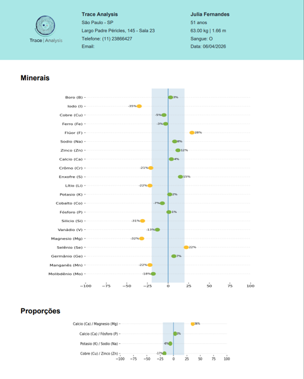
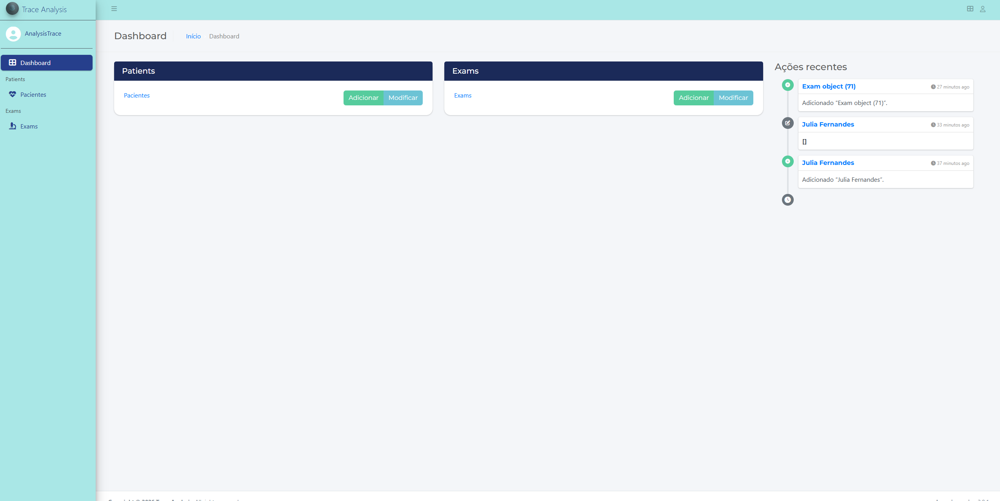
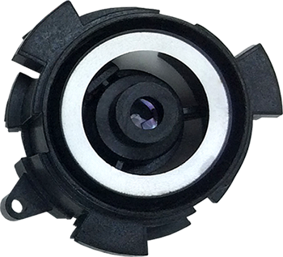
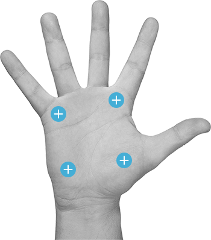
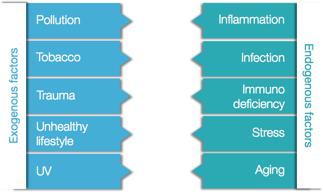

Mineral
Detect mineral imbalances and identify deficiencies or excess levels through advanced analytics.
Advanced screening and visualization of physiological and clinical data to support better decision making and health monitoring.

Detect mineral imbalances and identify deficiencies or excess levels through advanced analytics.
Identify exposure to harmful toxic metals and evaluate potential health risks.
Track oxidative stress indicators associated with aging and chronic conditions.
Advanced diagnostic intelligence platform designed for rapid screening, data visualization and clinical decision support.

Portable analysis with instant measurements and intuitive interface.
Advanced spectroscopy and intelligent analytics platform.
Instant evaluation of physiological and diagnostic indicators.
Non-invasive measurements performed directly at your clinic.
TraceAnalysis enables fast, non-invasive measurements with intelligent analytics in just a few steps.
Fill in patient or sample information directly into the TraceAnalysis platform.
Perform non-invasive measurement using the TraceAnalysis compatible device.
Advanced analytics instantly generate visual reports and insights.
TraceAnalysis enables professionals to quickly detect trace element imbalances, mineral deficiencies, oxidative stress indicators and toxic metal exposure. The platform is designed for fast, reliable and scalable clinical analytics.
TraceAnalysis uses optical and analytical technologies to deliver fast, reliable and non-invasive measurements.

Spectrophotometry is a quantitative analytical method that measures light absorption and optical density of chemical compounds.
The technology is based on the interaction between light wavelengths and biological tissues, enabling precise analysis of physiological markers.
This method is widely used in multiple industries including medical, pharmaceutical, environmental and laboratory diagnostics.
In healthcare, spectrophotometry enables non-invasive analysis and rapid diagnostic insights.

TraceAnalysis combines scientific measurement and intelligent analytics to generate actionable insights.
Minerals, oxidative stress and toxic metals play a critical role in physiological balance and long-term health.
Essential for body balance
Minerals and trace elements are fundamental for energy production, cognitive performance and immune system function.
Deficiencies can lead to fatigue, stress vulnerability and reduced performance.
Growing public health concern
Exposure to toxic metals from pollution, food and environment can impact physiological balance and increase health risks.
These elements contribute to oxidative stress and chronic health conditions.
Better ageing monitoring
Oxidative stress damages cells and contributes to ageing and chronic diseases.
Monitoring these indicators enables preventive and personalized healthcare.

Free radicals are molecules naturally produced by the body. However, excessive production can damage cellular components such as proteins, membranes and DNA.
External factors such as pollution, UV exposure, tobacco and environmental toxins significantly increase oxidative stress.
A diet rich in antioxidants — especially fruits and vegetables — helps protect the body and maintain physiological balance.
Scientific research supporting mineral balance, toxic metals and oxidative stress monitoring.
Common questions about TraceAnalysis technology and platform
TraceAnalysis is supported by a global network of partners and distributors worldwide.
4017 Washington Rd., #205
Mc Murray, PA 15317
United States
North America, Australia, Japan, Korea, Thailand, Malaysia, UK, Scandinavia, Poland, Czech Republic, Greece, Italy, Croatia & Argentina